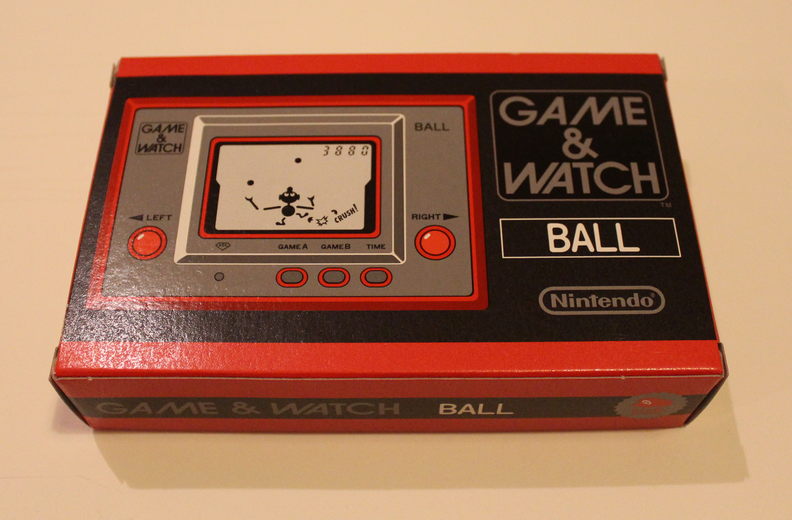

<
La serie Game & Watch era una línea de aproximadamente 59 juegos electrónicos portátiles que consistían de un solo juego que se podía jugar en una o dos pantallas LCD, además de ser un reloj y alarma. Algunos de los títulos del formato
Game & Watch fueron Pinball, Donkey Kong, The Legend of Zelda, Mario Bros, y Ballon Fight.
>
